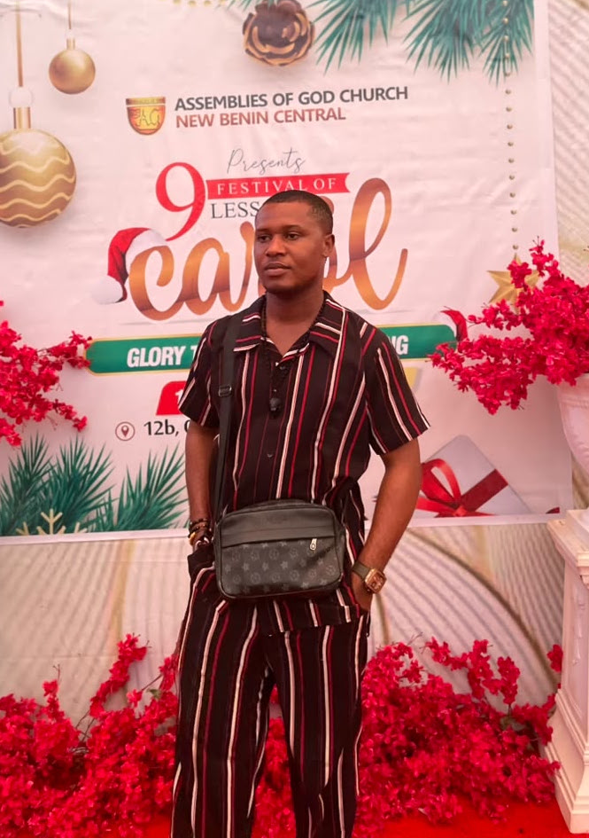

Ideas take
shape in print.
I’m Chinedu Promise Mmaduabuchi. I study Computer Science at MIVA Open University, with an interest in graphic design and the work that turns ideas into printed pieces.

 STUDENT / DESIGN INTERESTS / PRINT
STUDENT / DESIGN INTERESTS / PRINT
Learning how things work.
Exploring how ideas communicate.
Curious by nature.
Creative by practice.
I’m currently studying Computer Science and developing my creative interests alongside my academic work. Graphic design is a skill I practise, and I also handle printing jobs. Outside these interests, I enjoy gaming and reading.
This portfolio brings those parts of my life together in one place. It will grow as I add more of my work and academic experiences.
Read my profile ↗Some ideas
on the page.
Three commercial print and brand production case studies showcasing live client projects and marketing materials. They are technical design implementations, demonstrating real-world production and large-format printing workflows.